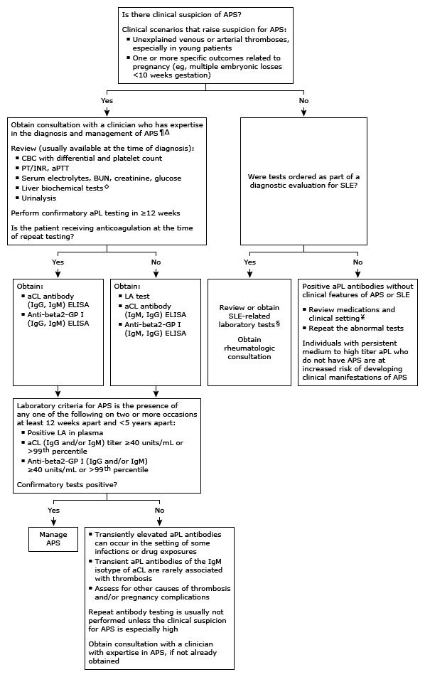

aCL: anticardiolipin; ANA: antinuclear antibody; aPL: antiphospholipid; APS: antiphospholipid syndrome; aPTT: activated partial thromboplastin time; BUN: blood urea nitrogen; CBC: complete blood count; CRP: C-reactive protein; ELISA: enzyme-linked immunosorbent assay; ESR: erythrocyte sedimentation rate; GP I: glycoprotein 1; IgG: immunoglobulin G; IgM: immunoglobulin M; INR: international normalized ratio; LA: lupus anticoagulant; PT: prothrombin time; SLE: systemic lupus erythematosus.
* LA is reported as either positive or negative. IgG aCL antibodies are reported in GPL (IgG phospholipid) standardized international units. IgM aCL antibodies are reported in MPL (IgM phospholipid) standardized international units. Interpretation of a specific abnormal result should be based upon the reference range reported with that result.
¶ Life-saving interventions and presumptive therapy of APS should not be delayed while awaiting the results of diagnostic testing.
Δ The diagnosis of APS requires several months, given the need for confirmatory laboratory testing. In the interim, it may be appropriate to pursue additional evaluation for other possible causes of vascular thrombosis or adverse pregnancy outcomes.
◊ Liver biochemical tests, including alanine aminotransferase (ALT), aspartate aminotransferase (AST), bilirubin, and alkaline phosphatase.
§ Laboratory tests:¥ LA and aCL are found in patients with autoimmune and rheumatologic diseases but are also associated with infection, medications (eg, amoxicillin, procainamide, phenytoin), and other disorders. A minority of healthy individuals have transient aPL but do not have clinical thrombosis or other features of APS, the clinical significance of which is unclear.